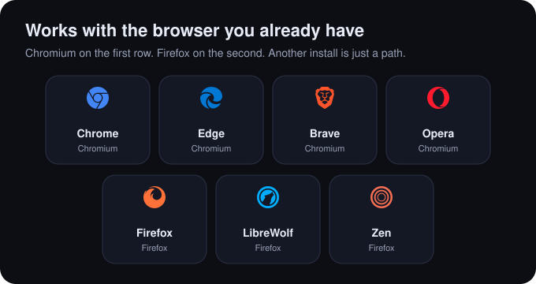

Install
Python 3.11 or newer, and a browser Teams can open. Selenium 4 brings the driver.
pip install teams-scraper
teams-scraper initinit asks for the language, the browser, and the data folder. It opens Teams, lets you check the classes with [x] and [ ], then asks for the teacher and a shortcut. You can run it again and change one part. The walkthrough is in First run.
From this repository
git clone https://github.com/notnomoro/teams-scraper.git
cd teams-scraper
pip install -e .The browser
Chrome, Edge, Brave, and Opera are Chromium. Firefox, LibreWolf, and Zen are Firefox. Paste the path if yours is somewhere else.

The profile stays in the data folder. It is not the profile you use every day, so a browser you already use can still be signed out here.
If that profile is not signed in to Teams, the run opens the window and asks you to sign in. Press Enter in the terminal when Teams is ready. From code, the same case raises auth.login_required instead of waiting.
Data folder
The default folder is datos/ in the current directory. teams-scraper init can point it somewhere else. One run can use --data DIR without changing the saved config.
That folder holds config.json, the browser profile, teams.db, the JSON copies, and descargas/. Do not commit it. See Privacy.
Check
teams-scraper --help
teams-scraper --version--help lists the commands. A read without a config stops with config.missing and tells you to run init.

Update
pip install --upgrade teams-scraperFrom a clone, pull and run pip install -e . again. The data folder stays where you left it.